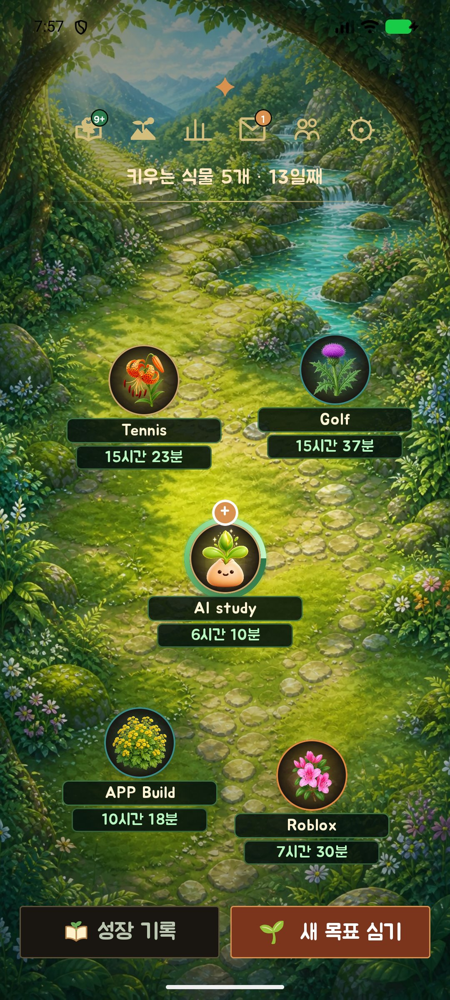
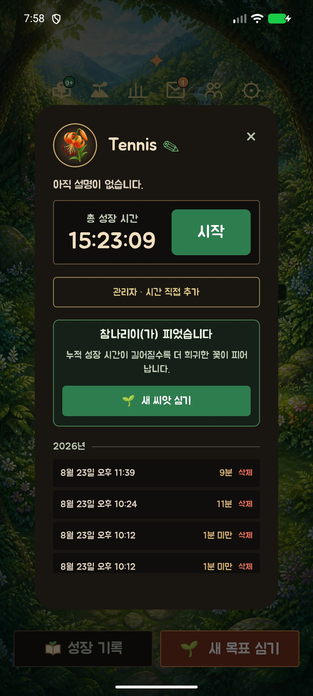
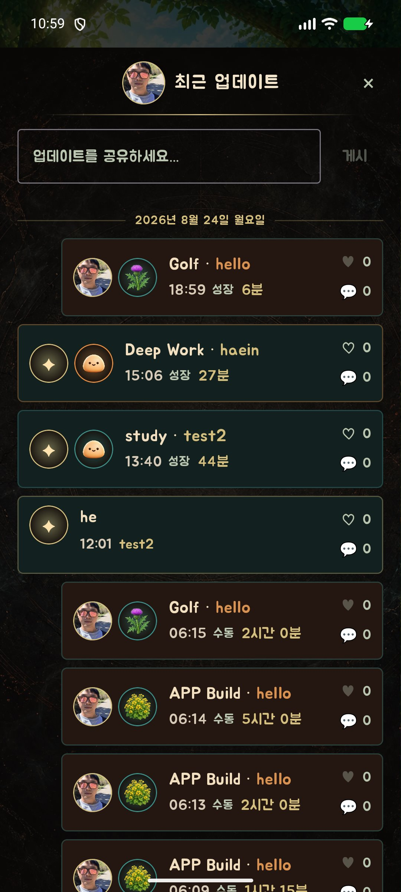

달래 (Dallae)
시간을 심으면
정원이 자랍니다
달래는 이루고 싶은 목표를 씨앗으로 심고, 거기에 쏟은 시간만큼 나만의 정원에 꽃을 피우는 성장 앱입니다. 혼자여도 외롭지 않게, 친구의 정원에 놀러가 서로의 성장을 응원할 수 있어요.
달래는 이렇게 작동해요
목표를 심고, 시간을 쏟고, 정원이 자라는 걸 지켜보세요.
목표 씨앗 심기
이루고 싶은 목표를 씨앗으로 등록하고, 필요하면 하위 목표로 세분화해요.
시간 투자하기
시작과 정지를 눌러 목표에 집중한 시간을 자연스럽게 기록해요.
정원에 꽃 피우기
쌓인 시간만큼 나만의 정원에 한국 자생화가 한 송이씩 피어나요.
친구와 나누기
친구를 추가하고 서로의 정원에 놀러가 성장 과정을 응원해요.
달래를 자세히 살펴보면

심으면, 자리는 정원이 알아서
이루고 싶은 목표를 씨앗으로 심으면 정원 안에 자연스럽게 자리를 잡아요. 한 번에 최대 8개의 목표를 키울 수 있고, 길게 눌러 원하는 자리로 옮기며 나만의 정원을 꾸밀 수 있습니다.

노력이 눈에 보이는 방식
목표에 투자한 시간이 쌓일수록 나만의 정원에 꽃이 한 송이씩 피어납니다. 진달래, 패랭이꽃처럼 실제 한국에서 자라는 꽃들을 하나씩 만나는 재미가 있어요. 숫자로 된 기록이 아니라, 직접 가꾼 정원으로 노력을 확인할 수 있습니다.

시작·정지 한 번으로 기록되는 시간
목표마다 시작과 정지를 누르기만 하면 성장 시간이 자동으로 쌓여요. 날짜별 기록은 성장 일지에 정리되고, 타이머가 실행되는 동안에는 알림과 위젯에서도 진행 상황을 확인할 수 있습니다.

혼자 하지만, 혼자는 아니게
친구를 추가하면 서로의 정원을 구경할 수 있어요. 각자의 속도로 목표를 향해 가지만, 친구가 얼마나 가꿔왔는지 보면서 서로에게 작은 자극과 응원이 됩니다. 모든 기록은 클라우드에 안전하게 백업돼요.